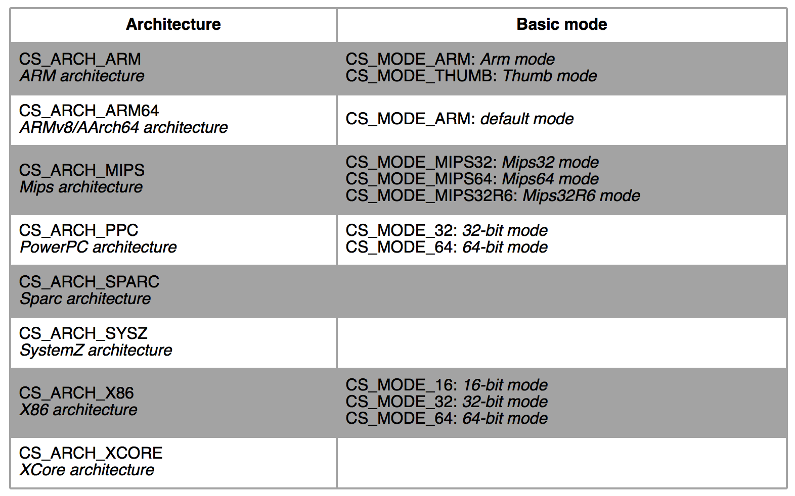

Custom Disassemble
这里简单介绍一下代码混淆，常见的代码混淆都是基于指令重叠进行的，也就是误导反汇编器将本属于前一条指令的部分解释为当前指令的一部分，这样得到的反汇编结果必然是错误的，比如下面这样：
1 2 3 4 5 6 7 8 9 10 _start()volatile ( "jmp antidebug + 1\n" "antidebug:\n" ".short 0xe9\n" "mov $0x31337, %%eax\n" : :) ;
得到的汇编结果如下图所示：
1 2 3 4 5 6 7 8 9 10 11 12 13 14 Disassembly of section .text:
可以看上面的反汇编结果中出现指令重叠的现象，但是从源码可以看到程序是可以正常执行的，只是无法通过常规的反汇编器进行分析。
这个文档将会介绍如何使用capstone自定义反汇编，准确讲是自定义递归反汇编，从而绕过一些二进制文件的代码混淆。
反汇编技术概述
一般来说，反汇编技术可以分为两类，静态反汇编和动态反汇编。
静态反汇编是通过静态分析二进制文件以进行反汇编工作，而动态反汇编则是通过跟踪程序运行时所执行的指令以进行反汇编的工作。
而静态反汇编又可以进一步划分为线性反汇编和递归反汇编。 线性反汇编就是按顺序读取二进制文件然后将二进制文件中的机器码解释为汇编代码，比如objdump就是典型的线性反汇编器；而递归反汇编则可执行文件的程序入口点进行反汇编，然后按照程序的执行流并且以基本块为基本单位进行反汇编，比如IDA Pro中的反汇编就是递归反汇编。
基本块：基本块就是一串指令序列，其中第一条指令是唯一的入口点，而最后一条指令则是唯一的出口点。换句话说，在基本块中除了第一条和最后一条指令就没有其它跳转指令。
显然，静态反汇编无法处理间接跳转的情况，这些问题能够通过动态反汇编解决；而动态反汇编则存在代码覆盖率的问题，也就是动态反汇编无法反汇编程序没有执行的部分，而恶意软件中真正执行破坏的代码都是需要一定的条件进行触发的，这就是所谓的逻辑炸弹。为了解决动态反汇编的代码覆盖率问题，通常使用模糊测试，也就是自动生成一些提高程序分支覆盖的输入。
Capstone
Capstone是一个反汇编框架，能够透明地处理大多数流行的指令体系，包括X86. ARM以及MIPS等，提供了一个简单且轻量的API供用户自定义反汇编工具。
Capstone官网：The Ultimate Disassembly Framework – Capstone – The Ultimate Disassembler
在Capstone的官网文档中找到了下面的示例：
1 2 3 4 5 6 7 8 9 10 11 12 13 14 15 16 17 18 19 20 21 22 23 24 25 26 27 28 29 30 31 32 33 #include <stdio.h> #include <inttypes.h> #include <capstone/capstone.h> #define CODE "\x55\x48\x8b\x05\xb8\x13\x00\x00" int main (void ) size_t count;if (cs_open(CS_ARCH_X86, CS_MODE_64, &handle) != CS_ERR_OK)return -1 ;sizeof (CODE)-1 , 0x1000 , 0 , &insn);if (count > 0 ) {size_t j;for (j = 0 ; j < count; j++) {printf ("0x%" PRIx64":\t%s\t\t%s\n" , insn[j].address, insn[j].mnemonic,else printf ("ERROR: Failed to disassemble given code!\n" );return 0 ;
编译该文件：
gcc test.c -lcapstone -o test
这里需要注意"-lcapstone"选项需要放在"test.c"后面，因为链接编辑器进行静态链接时是从左往右进行扫描的，所以文件所依赖的库应该放在文件的右边。
运行程序得到的结果如下：
1 2 0x1000: push rbp
所以可以看到，Capstone以库的形式提供API，通过Capstone提供的API，能够将一系列字节流反汇编为对应指令体系下的汇编代码。
下面对Capstone的使用进行详细介绍。
在上面的示例中，首先声明了一个"csh"类型的变量，这就是每一个Capstone提供的API都需要使用到的handle。
随后由声明了"cs_insn"类型的指针，这个指针所指向的地址将会包含所有已经反汇编完成的指令，后面将会介绍这个指针的结构。
然后调用了"cs_open()"函数，这个函数将会接受三个变量，指令集体系架构，指令集体系架构的模式，以及一个handle指针。Capstone能够支持的指令集体系架构以及模式以枚举的方式给出，具体如下：

这个函数相当于进行一些初始化的工作，如果顺利初始化，将会返回"CS_ERR_OK"。
而执行反汇编行为的函数则是"cs_disasm()"函数，函数原型如下：
1 2 3 4 5 6 size_t cs_disasm ( csh handle, const uint8_t *code, size_t code_size, uint64_t address, size_t count, cs_insn **insn)
这个函数所接受的第一个参数就是handle；第二参数是将要进行反汇编的字节；第三个参数是将要进行反汇编的字节的长度；第四个参数用于指定第一条指令的地址，在上面的示例中将第一条指令的地址指定为0x1000；第五个参数传入0表示执行反汇编直到所有的字节都已反汇编完成或者遇到无法正确反汇编的指令为止。第六个参数是"cs_insn"指针的地址，"cs_disasm()"函数将会在内存堆区域划分一块区域用以存放所有反汇编的指令，并将这块区域的地址返回到"cs_insn"指针中。
这个函数的返回值就是正确反汇编的指令数。
随后通过"cs_insn"指令析出所有已经反汇编指令的信息，"cs_insn"结构的成员如下：
1 2 3 4 5 6 7 8 9 10 11 12 13 14 15 16 17 18 19 20 21 22 23 24 25 26 27 28 29 30 31 32 33 34 35 36 37 38 typedef struct cs_insn {unsigned int id;uint64_t address;uint16_t size;uint8_t bytes[16 ];char mnemonic[CS_MNEMONIC_SIZE];char op_str[160 ];
可以一个"cs_insn"结构体就代表一条指令。
在"cs_insn"指针使用完成后，可以调用"cs_free()"函数释放该指针所指向的内存区域。
处理完所有的反汇编后，使用"cs_close()"关闭handle。
如果想要了解更多关于Capstone提供的API信息，可以阅读位于"/usr/include/capstone"目录下的"capstone.h"文件。
定义线性反汇编工具
在了解了Capstone所提供的各种API的作用后，很容易自定义一个线性反汇编的工具。
完整代码如下：
1 2 3 4 5 6 7 8 9 10 11 12 13 14 15 16 17 18 19 20 21 22 23 24 25 26 27 28 29 30 31 32 33 34 35 36 37 38 39 40 41 42 43 44 45 46 47 48 49 50 51 52 53 54 55 56 57 58 59 60 61 62 63 64 65 66 67 68 69 70 71 72 73 74 75 76 77 78 79 80 81 82 83 84 85 86 87 88 89 90 91 92 93 94 95 96 97 98 99 100 101 102 103 104 105 106 107 108 109 110 111 112 113 114 115 116 117 118 119 120 121 #include <stdio.h> #include <stdlib.h> #include <stdint.h> #include <string.h> #include <fcntl.h> #include <elf.h> #include <errno.h> #include <sys/mman.h> #include <sys/stat.h> #include <capstone/capstone.h> typedef struct _file_handle_t { char *file_name;uint8_t *mem;char *shrtable;int text_index;int data_index;file_handle_t ;int main (int argc, char *argv[]) if (argc < 2 )printf ("Usage: %s <object file>\n" , argv[0 ]);exit (0 );file_handle_t file_handle;1 ]);int fd = open(file_handle.file_name, O_RDONLY);if (fd < 0 )"open\n" );exit (EXIT_FAILURE);struct stat st ;if (fstat(fd, &st) < 0 )"fstat" );exit (EXIT_FAILURE);NULL , st.st_size, PROT_READ, MAP_PRIVATE, fd, 0 );if (file_handle.mem == MAP_FAILED)"mmap" );exit (EXIT_FAILURE);if (file_handle.mem[0 ] != 0x7f && strcmp ((char *)&file_handle.mem[1 ], "ELF" ) != 0 )printf ("%s is not an ELF file.\n" , argv[1 ]);exit (EXIT_FAILURE);0 ];int ph_offset = file_handle.ehdr->e_phoff;int sh_offset = file_handle.ehdr->e_shoff;char *)&file_handle.mem[file_handle.shdr[file_handle.ehdr->e_shstrndx].sh_offset];0 ;0 ;int i;for (i = 0 ; i < file_handle.ehdr->e_phnum; i++)if (file_handle.phdr[i].p_flags == (PF_R | PF_X))if (file_handle.phdr[i].p_flags == (PF_R | PF_W))for (i = 0 ; i < file_handle.ehdr->e_shnum; i++)if ( file_handle.shdr[i].sh_offset >= file_handle.phdr[file_handle.text_index].p_offset && printf ("disassembly of %s:\n" , &file_handle.shrtable[file_handle.shdr[i].sh_name]);size_t count;if (cs_open(CS_ARCH_X86, CS_MODE_64, &handle) != CS_ERR_OK)printf ("Failed to open capstone.\n" );exit (EXIT_FAILURE);0 ,if (count > 0 )size_t j;for (j = 0 ; j < count; j++)printf ("0x%" PRIX64": %-16s\t\t%s\n" , insn[j].address, insn[j].mnemonic, insn[j].op_str);else printf ("Failed to disassemble this section" );exit (EXIT_FAILURE);printf ("\n" );return 0 ;
在上述代码中，以节为单位进行反汇编，并且这里只对属于代码段的节进行反汇编。
使用一个helloworld程序作为测试，输出结果如下图所示：
1 2 3 4 5 6 7 8 9 10 11 12 13 14 15 16 17 18 disassembly of .init:
为了不影响阅读，这里将中间这段比较长的反汇编结果省略掉了。
从输出结果来看，Capstone是能够对目标文件进行正确反汇编的。
定义递归反汇编工具
接下来将要使用capstone提供的API定义一个递归反汇编工具，递归反汇编相对会比较困难。正如前面所提到的，递归反汇编通过追踪程序的控制流来查找代码，所以我们要在自定义的递归反汇编工具中实现程序控制流跟踪的算法。
要对程序的控制流进行跟踪，需要更多指令相关的细节信息，比如需要知道哪些指令是控制转移的指令，以及这些指令的操作数。而想要获取到这些信息，需要使用Capstone的detail模式进行反汇编。
正如前面所提到的，"cs_insn"结构体中包含一个"cs_detail"类型的指针，而"cs_detail"的成员如下：
1 2 3 4 5 6 7 8 9 10 11 12 13 14 15 16 typedef struct cs_detail {uint16_t regs_read[12 ]; uint8_t regs_read_count; uint16_t regs_write[20 ]; uint8_t regs_write_count; uint8_t groups[8 ]; uint8_t groups_count; union {
使用"cs_detail"类型指针中的"groups_count"以及"groups"成员能够知道当前这条指令属于什么类型，比如下面这几种ISA无关的通用类型：
1 2 3 4 5 6 7 8 9 10 typedef enum cs_group_type {0 ,
如果还想要进一步知道该指令具体是什么指令的话，就需要使用到一些ISA相关的信息，而ISA相关的信息都能在Capstone的目录下找到，比如/usr/include/capstone/X86.h文件中就定义了X86相关的信息。"cs_insn"结构中的"id"成员指明了该指令具体是什么指令，该成员的取值范围能够在ISA相关的头文件中找到，比如：
1 2 if (insn->id == X86_INS_JMP)printf ("Unconditional jump instruction.\n" );
而如果想要知道指令的操作数就需要使用"cs_detail"中的"cs_x86"成员：
1 2 3 4 5 6 7 8 typedef struct cs_x86 {uint8_t op_count;8 ];
其中"cs_x86_op"结构体的定义如下：
1 2 3 4 5 6 7 8 9 10 11 12 13 14 15 16 17 18 19 20 21 typedef enum x86_op_type {0 , typedef struct cs_x86_op {union {int64_t imm; uint8_t size;
通过"cs_x86_op"结构体中的"imm"成员能够获取到指令的立即数操作数，作为跳转的地址。
注意静态反汇编只能使用立即数作为跳转的地址，因为无法知道寄存器的值。
另外，因为不知道什么时候会遇到下一条控制转移指令，因此无法在"cs_disass()"函数中指定反汇编的字节数，也就无法使用该函数进行反汇编。
Capstone提供另一个反汇编API，也就是"cs_disass()“的迭代版本，名为"cs_disass_iter()”，该函数一次只会反汇编一条指令。函数原型如下：
1 2 3 4 5 bool cs_disasm_iter (csh handle, const uint8_t **code, size_t *size, uint64_t *address, cs_insn *insn)
"cs_disasm_iter()"函数所接受的参数含义与"cs_disasm()"函数所接受的参数的含义是一致的，只不过少了一个"count"参数，并且中间三个参数都指针，这是因为"cs_disasm_iter()"函数会在执行完毕后修改指向代码的指针"code"参数为下一个要反汇编的字节的地址，更新剩余反汇编字节数"size"为减去当前指令字节数后的结果，并且将"address"参数更新为下一条指令的地址。
实际上，"cs_disass_iter()"函数和"cs_disass()"函数在参数"count = 1"时的内部原理是一致的，但是使用"cs_disass_iter()"函数能够更快的运行，因为该函数会对同一块内存区域进行重复使用，而不会调用"malloc()"或者"realloc()"函数进行内存分配。
递归反汇编的完整代码如下所示：
1 2 3 4 5 6 7 8 9 10 11 12 13 14 15 16 17 18 19 20 21 22 23 24 25 26 27 28 29 30 31 32 33 34 35 36 37 38 39 40 41 42 43 44 45 46 47 48 49 50 51 52 53 54 55 56 57 58 59 60 61 62 63 64 65 66 67 68 69 70 71 72 73 74 75 76 77 78 79 80 81 82 83 84 85 86 87 88 89 90 91 92 93 94 95 96 97 98 99 100 101 102 103 104 105 106 107 108 109 110 111 112 113 114 115 116 117 118 119 120 121 122 123 124 125 126 127 128 129 130 131 132 133 134 135 136 137 138 139 140 141 142 143 144 145 146 147 148 149 150 151 152 153 154 155 156 157 158 159 160 161 162 163 164 165 166 167 168 169 170 171 172 173 174 175 176 177 178 179 180 181 182 183 184 185 186 187 188 189 190 191 192 193 194 195 196 197 198 199 200 201 #include <stdio.h> #include <stdlib.h> #include <stdint.h> #include <string.h> #include <elf.h> #include <errno.h> #include <fcntl.h> #include <sys/mman.h> #include <sys/stat.h> #include <capstone/capstone.h> typedef struct _file_handle_t { char *file_name;uint8_t *mem;char *shrtable;int text_index;int data_index;file_handle_t ;typedef struct _address_t {uint64_t address;int layer;address_t ;#define HASH_SIZE 0x1000 #define QUEUE_SIZE 0x100 bool is_disasmed[HASH_SIZE] = { false };address_t control_flow[QUEUE_SIZE];int head = 0 ;int tail = 0 ;void print_prefix (int layer) int i;printf ("|-" );for (i = 0 ; i < layer; i++)printf ("-" );int main (int argc, char *argv[]) if (argc < 2 )printf ("Usage: %s <object file>\n" , argv[0 ]);exit (0 );file_handle_t file_handle;1 ]);0 ;0 ;int fd = open(file_handle.file_name, O_RDONLY);if (fd < 0 )"open\n" );exit (EXIT_FAILURE);struct stat st ;if (fstat(fd, &st) < 0 )"fstat" );exit (EXIT_FAILURE);NULL , st.st_size, PROT_READ, MAP_PRIVATE, fd, 0 );if (file_handle.mem == MAP_FAILED)"mmap" );exit (EXIT_FAILURE);if (file_handle.mem[0 ] != 0x7f && strcmp ((char *)&file_handle.mem[1 ], "ELF" ) != 0 )printf ("%s is not an ELF file.\n" , argv[1 ]);exit (EXIT_FAILURE);0 ];int ph_offset = file_handle.ehdr->e_phoff;int sh_offset = file_handle.ehdr->e_shoff;char *)&file_handle.mem[file_handle.shdr[file_handle.ehdr->e_shstrndx].sh_offset];uint64_t base_address = 0x0 ;uint32_t text_size = 0x0 ;uint64_t text_offset = 0x0 ;int i;for (i = 0 ; i < file_handle.ehdr->e_phnum; i++)if (file_handle.phdr[i].p_flags == (PF_R | PF_X))break ;0 ;if (cs_open(CS_ARCH_X86, CS_MODE_64, &handle) != CS_ERR_OK)printf ("Failed to open capstone.\n" );exit (EXIT_FAILURE);if (!insn)printf ("Failed to alloc memory for insn.\n" );exit (EXIT_FAILURE);while (head != tail)uint64_t addr = control_flow[tail].address;int current_layer = control_flow[tail].layer;1 ) % QUEUE_SIZE;true ;size_t offset = addr - base_address;uint8_t *disasm = &file_handle.mem[offset];size_t size = text_offset + text_size - offset;printf ("Branch from 0x%lx:\n" , addr);while (cs_disasm_iter(handle, &disasm, &size, &addr, insn))if (insn->id == X86_INS_INVALID || insn->size == 0 ) break ;printf ("0x%" PRIX64": %-16s\t\t%s\n" , insn->address, insn->mnemonic, insn->op_str);if (insn->id == X86_INS_HLT) break ;if (insn->detail->groups_count > 0 )int n;bool is_cft =false ;uint64_t target = 0x0 ;for (n = 0 ; n < insn->detail->groups_count; n++)if (insn->detail->groups[n] == CS_GRP_CALL || insn->detail->groups[n] == CS_GRP_JUMP)true ;break ;for (n = 0 ; is_cft && n < insn->detail->x86.op_count; n++)if (insn->detail->x86.operands[n].type == X86_OP_IMM)break ;if (target && !is_disasmed[target % HASH_SIZE])1 ;1 ) % QUEUE_SIZE;if (insn->id != X86_INS_JMP && insn->id != X86_INS_LJMP)if (!is_disasmed[addr % HASH_SIZE])1 ;1 ) % QUEUE_SIZE;break ;printf ("\n" );1 );return 0 ;
编译完成后，使用前面演示代码混淆的例子进行递归反汇编，结果如下所示：
1 2 3 4 5 6 7 8 9 10 11 12 Branch from 0x1000:
可以看到，这次程序没有从0x100a处开始反汇编，而是从0x100b处开始反汇编，但是依然没有正确反汇编，这是因为Capstone还是将0x100a处的那一个字节作为0x100b处的指令中的一部分了。
所以还需要定义其他规则让Capstone处理代码重叠问题。